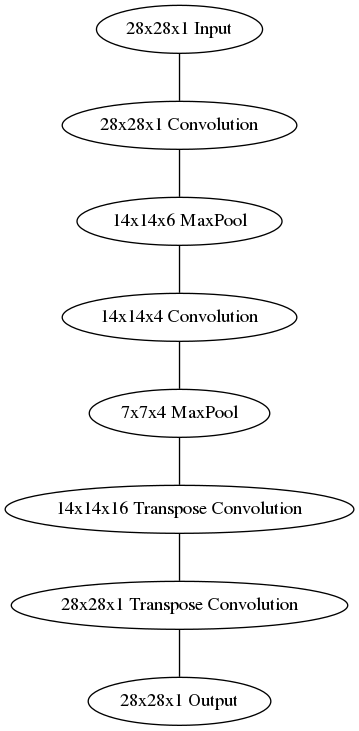
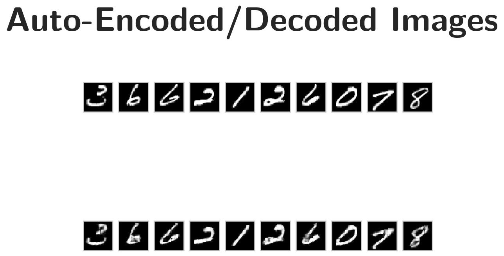

Convolutional Autoencoder
Table of Contents
Introduction
Sticking with the MNIST dataset, let's improve our autoencoder's performance using convolutional layers. We'll build a convolutional autoencoder to compress the MNIST dataset.
- The encoder portion will be made of convolutional and pooling layers and the decoder will be made of transpose convolutional layers that learn to "upsample" a compressed representation.
Compressed Representation
A compressed representation can be great for saving and sharing any kind of data in a way that is more efficient than storing raw data. In practice, the compressed representation often holds key information about an input image and we can use it for denoising images or other kinds of reconstruction and transformation!
Set Up
Imports
Python Standard Library
from collections import namedtuple
from datetime import datetime
from pathlib import Path
From PyPi
from dotenv import load_dotenv
from graphviz import Graph
from torchvision import datasets
import matplotlib.pyplot as pyplot
import numpy
import seaborn
import torch
import torch.nn as nn
import torch.nn.functional as F
import torchvision.transforms as transforms
Plotting
get_ipython().run_line_magic('matplotlib', 'inline')
get_ipython().run_line_magic('config', "InlineBackend.figure_format = 'retina'")
seaborn.set(style="whitegrid",
rc={"axes.grid": False,
"font.family": ["sans-serif"],
"font.sans-serif": ["Open Sans", "Latin Modern Sans", "Lato"],
"figure.figsize": (8, 6)},
font_scale=3)
Test for CUDA
The test-code uses the check later on so I'll save it to the train_on_gpu variable.
train_on_gpu = torch.cuda.is_available()
device = torch.device("cuda:0" if train_on_gpu else "cpu")
print("Using: {}".format(device))
Using: cuda:0
The Data
Setup the Data Transform
transform = transforms.ToTensor()
Load the Training and Test Datasets
load_dotenv()
path = Path("~/datasets/MNIST/").expanduser()
print(path)
print(path.is_dir())
/home/hades/datasets/MNIST True
train_data = datasets.MNIST(root=path, train=True,
download=True, transform=transform)
test_data = datasets.MNIST(root=path, train=False,
download=True, transform=transform)
Create training and test dataloaders
NUM_WORKERS = 0
# how many samples per batch to load
BATCH_SIZE = 20
Prepare Data Loaders
train_loader = torch.utils.data.DataLoader(train_data,
batch_size=BATCH_SIZE,
num_workers=NUM_WORKERS)
test_loader = torch.utils.data.DataLoader(test_data,
batch_size=BATCH_SIZE,
num_workers=NUM_WORKERS)
Visualize the Data
Obtain One Batch of Training Images
dataiter = iter(train_loader)
images, labels = dataiter.next()
images = images.numpy()
Get One Image From the Batch
img = numpy.squeeze(images[0])
Plot
figure, axe = pyplot.subplots()
figure.suptitle("First Image", weight="bold")
image = axe.imshow(img, cmap='gray')

Convolutional Autoencoder
Encoder
The encoder part of the network will be a typical convolutional pyramid. Each convolutional layer will be followed by a max-pooling layer to reduce the dimensions of the layers.
Decoder
The decoder, though, might be something new to you. The decoder needs to convert from a narrow representation to a wide, reconstructed image. For example, the representation could be a 7x7x4 max-pool layer. This is the output of the encoder, but also the input to the decoder. We want to get a 28x28x1 image out from the decoder so we need to work our way back up from the compressed representation. A schematic of the network is shown below.
graph = Graph(format="png")
# Input layer
graph.node("a", "28x28x1 Input")
# the Encoder
graph.node("b", "28x28x16 Convolution")
graph.node("c", "14x14x16 MaxPool")
graph.node("d", "14x14x4 Convolution")
graph.node("e", "7x7x4 MaxPool")
# The Decoder
graph.node("f", "14x14x16 Transpose Convolution")
graph.node("g", "28x28x1 Transpose Convolution")
# The Output
graph.node("h", "28x28x1 Output")
edges = "abcdefgh"
graph.edges([edges[edge] + edges[edge+1] for edge in range(len(edges) - 1)])
graph.render("graphs/network_graph.dot")
graph
# Out[12]: 
:END:

Here our final encoder layer has size 7x7x4 = 196. The original images have size 28x28 = 784, so the encoded vector is 25% the size of the original image. These are just suggested sizes for each of the layers. Feel free to change the depths and sizes, in fact, you're encouraged to add additional layers to make this representation even smaller! Remember our goal here is to find a small representation of the input data.
Transpose Convolutions, Decoder
This decoder uses transposed convolutional layers to increase the width and height of the input layers. They work almost exactly the same as convolutional layers, but in reverse. A stride in the input layer results in a larger stride in the transposed convolution layer. For example, if you have a 3x3 kernel, a 3x3 patch in the input layer will be reduced to one unit in a convolutional layer. Comparatively, one unit in the input layer will be expanded to a 3x3 path in a transposed convolution layer. PyTorch provides us with an easy way to create the layers, nn.ConvTranspose2d.
It is important to note that transpose convolution layers can lead to artifacts in the final images, such as checkerboard patterns. This is due to overlap in the kernels which can be avoided by setting the stride and kernel size equal. In this Distill article from Augustus Odena, et al, the authors show that these checkerboard artifacts can be avoided by resizing the layers using nearest neighbor or bilinear interpolation (upsampling) followed by a convolutional layer.
We'll show this approach in another notebook, so you can experiment with it and see the difference.
- Build the encoder out of a series of convolutional and pooling layers.
- When building the decoder, recall that transpose convolutional layers can upsample an input by a factor of 2 using a stride and kernel_size of 2.
See:
To get the output size of our Convolutional Layers you use the formula:
\[ o = \frac{W - F + 2P}{S} + 1 \]
Where W is the input size (28 here), F is the filter size, P is the zero-padding, and S is the stride. For our first layer we want to keep the output the same size as the input.
The output for a maxpool layer uses a similar set of equations.
\begin{align} W_2 &= \frac{W_1 - F}{S} + 1\\ H_2 &= \frac{H_Y - F}{S} + 1\\ D_2 = D_1\\ \end{align}Where W is the width, H is the height, and D is the depth.
Layer = namedtuple("Layer", "kernel stride depth padding".split())
Layer.__new__.__defaults__= (0,)
def output_size(input_size: int, layer: Layer, expected: int) -> int:
"""Calculates the output size of the layer
Args:
input_size: the size of the input to the layer
layer: named tuple with values for the layer
expected: the value you are expecting
Returns:
the size of the output
Raises:
AssertionError: the calculated value wasn't the expected one
"""
size = 1 + ((input_size - layer.kernel + 2 * layer.padding)/layer.stride)
print(layer)
print("Layer Output Size: {}".format(size))
assert size == expected
return size
The Encoder Layers
Layer One
The first layer is a Convolutional Layer that we want to have the same size output as the input but with a depth of sixteen. The CS 231 page notes that to keep the size of the output the same as the input you should set the stride to one and once you have decided on your kernle size (F) then you can find your padding using this equation:
\[ P = \frac{F - 1}{2} \]
In this case I'm going to use a filter size of three so our padding will be:
\begin{align} P &= \frac{3 - 1}{2}\\ &= 1\\ \end{align}We can double-check this by plugging the values back intoo the equation for output size.
\begin{align} W' &= \frac{W - F + 2P}{S} + 1\\ &= \frac{28 - 3 + 2(1)}{1} + 1\\ &= 28\\ \end{align}| Variable | Description |
|---|---|
| W | One dimension of the input |
| F | One dimension of the Kernel (filter) |
| S | Stride |
layer_one = Layer(kernel = 3,
padding = 1,
stride = 1,
depth = 16)
INPUT_ONE = 28
OUTPUT_ONE = output_size(INPUT_ONE, layer_one, INPUT_ONE)
INPUT_DEPTH = 1
Layer(kernel=3, stride=1, depth=16, padding=1) Layer Output Size: 28.0
Layer Two
The second layer is a MaxPool layer that will keep the depth of six but will halve the size to fourteen. According to the CS 231 n page on Convolutional Networks, there are only two values for the kernel size that are usually used - 2 and 3, and the stride is usually just 2, with a kernel size of 2 being more common, and as it turns out, a kernel size of 2 and a stride of 2 will reduce our input dimensions by a half, which is what we want.
\begin{align} W &= \frac{28 - 2}{2} + 1\\ &= 14\\ \end{align} layer_two = Layer(kernel=2, stride=2, depth=layer_one.depth)
OUTPUT_TWO = output_size(OUTPUT_ONE, layer_two, 14)
Layer(kernel=2, stride=2, depth=16, padding=0) Layer Output Size: 14.0
Layer Three
Our third layer is another convolutional layer that preserves the input width and height but this time the output will have a depth of 4.
layer_three = Layer(kernel=3, stride=1, depth=4, padding=1)
OUTPUT_THREE = output_size(OUTPUT_TWO, layer_three, OUTPUT_TWO)
Layer(kernel=3, stride=1, depth=4, padding=1) Layer Output Size: 14.0
Layer Four
The last layer in the encoder is a max pool layer that reduces the previous layer by half (to dimensions of 7) while preserving the depth.
layer_four = Layer(kernel=2, stride=2, depth=layer_three.depth)
OUTPUT_FOUR = output_size(OUTPUT_THREE, layer_four, 7)
Layer(kernel=2, stride=2, depth=4, padding=0) Layer Output Size: 7.0
Decoders
Layer Five
We want an output of 14 x 14 x 16 from an input of 7 x 7 x 4. The comments given with this exercise say that using a kernel of 2 and stride of 2 will double the dimensions, much as those same values halve the dimensions with Max-Pooling.
layer_five = Layer(kernel=2, stride=2, depth=16)
Layer Six
This layer will expand the image back to its original size of 28 x 28 x 1
layer_six = Layer(kernel=2, stride=2, depth=1)
Define the NN Architecture
class ConvAutoencoder(nn.Module):
"""A CNN AutoEncoder-Decoder"""
def __init__(self) -> None:
super().__init__()
## encoder layers ##
self.convolution_1 = nn.Conv2d(in_channels=INPUT_DEPTH,
out_channels=layer_one.depth,
kernel_size=layer_one.kernel,
stride=layer_one.stride,
padding=layer_one.padding)
self.max_pool = nn.MaxPool2d(kernel_size=layer_two.kernel,
stride=layer_two.stride)
self.convolution_2 = nn.Conv2d(in_channels=layer_two.depth,
out_channels=layer_three.depth,
kernel_size=layer_three.kernel,
stride=layer_three.stride,
padding=layer_three.padding)
## decoder layers ##
self.transpose_convolution_1 = nn.ConvTranspose2d(
in_channels=layer_four.depth,
out_channels=layer_five.depth,
kernel_size=layer_five.kernel,
stride=layer_five.kernel)
self.transpose_convolution_2 = nn.ConvTranspose2d(
in_channels=layer_five.depth,
out_channels=layer_six.depth,
kernel_size=layer_six.kernel,
stride=layer_six.kernel)
self.relu = nn.ReLU()
self.sigmoid = nn.Sigmoid()
return
def forward(self, x: torch.Tensor):
## encode ##
x = self.max_pool(self.relu(self.convolution_1(x)))
x = self.max_pool(self.relu(self.convolution_2(x)))
## decode ##
x = self.relu(self.transpose_convolution_1(x))
return self.sigmoid(self.transpose_convolution_2(x))
test = ConvAutoencoder()
dataiter = iter(train_loader)
images, labels = dataiter.next()
x = test.convolution_1(images)
print(x.shape)
assert x.shape == torch.Size([BATCH_SIZE, 16, 28, 28])
x = test.max_pool_1(x)
print(x.shape)
assert x.shape == torch.Size([BATCH_SIZE, 16, 14, 14])
x = test.relu(x)
print(x.shape)
assert x.shape == torch.Size([BATCH_SIZE, 16, 14, 14])
x = test.convolution_2(x)
print(x.shape)
assert x.shape == torch.Size([BATCH_SIZE, 4, 14, 14])
x = test.max_pool_2(x)
print(x.shape)
assert x.shape == torch.Size([BATCH_SIZE, 4, 7, 7])
x = test.relu(x)
print(x.shape)
assert x.shape == torch.Size([BATCH_SIZE, 4, 7, 7])
x = test.transpose_convolution_1(x)
print(x.shape)
assert x.shape == torch.Size([BATCH_SIZE, 16, 14, 14])
x = test.relu(x)
print(x.shape)
assert x.shape == torch.Size([BATCH_SIZE, 16, 14, 14])
x = test.transpose_convolution_2(x)
print(x.shape)
assert x.shape == torch.Size([BATCH_SIZE, 1, 28, 28])
torch.Size([20, 16, 28, 28]) torch.Size([20, 16, 14, 14]) torch.Size([20, 16, 14, 14]) torch.Size([20, 4, 14, 14]) torch.Size([20, 4, 7, 7]) torch.Size([20, 4, 7, 7]) torch.Size([20, 16, 14, 14]) torch.Size([20, 16, 14, 14]) torch.Size([20, 1, 28, 28])
Initialize The NN
model = ConvAutoencoder()
print(model)
model.to(device)
ConvAutoencoder( (convolution_1): Conv2d(1, 16, kernel_size=(3, 3), stride=(1, 1), padding=(1, 1)) (max_pool): MaxPool2d(kernel_size=2, stride=2, padding=0, dilation=1, ceil_mode=False) (convolution_2): Conv2d(16, 4, kernel_size=(3, 3), stride=(1, 1), padding=(1, 1)) (transpose_convolution_1): ConvTranspose2d(4, 16, kernel_size=(2, 2), stride=(2, 2)) (transpose_convolution_2): ConvTranspose2d(16, 1, kernel_size=(2, 2), stride=(2, 2)) (relu): ReLU() (sigmoid): Sigmoid() )
Training
Here I'll write a bit of code to train the network. I'm not too interested in validation here, so I'll just monitor the training loss and the test loss afterwards.
We are not concerned with labels in this case, just images, which we can get from the train_loader. Because we're comparing pixel values in input and output images, it will be best to use a loss that is meant for a regression task. Regression is all about comparing quantities rather than probabilistic values. So, in this case, I'll use MSELoss. And compare output images and input images as follows:
loss = criterion(outputs, images)
Otherwise, this is pretty straightfoward training with PyTorch. Since this is a convolutional autoencoder, our images do not need to be flattened before being passed in an input to our model.
Train the Model
criterion = nn.MSELoss()
optimizer = torch.optim.Adam(model.parameters(), lr=0.001)
n_epochs = 30
started = datetime.now()
model.train()
for epoch in range(1, n_epochs+1):
# monitor training loss
train_loss = 0.0
###################
# train the model #
###################
for data in train_loader:
# _ stands in for labels, here
# no need to flatten images
images, _ = data
images = images.to(device)
# clear the gradients of all optimized variables
optimizer.zero_grad()
# forward pass: compute predicted outputs by passing inputs to the model
outputs = model(images)
# calculate the loss
loss = criterion(outputs, images)
# backward pass: compute gradient of the loss with respect to model parameters
loss.backward()
# perform a single optimization step (parameter update)
optimizer.step()
# update running training loss
train_loss += loss.item()*images.size(0)
# print avg training statistics
train_loss = train_loss/len(train_loader)
print('Epoch: {} \tTraining Loss: {:.6f}'.format(
epoch,
train_loss
))
ended = datetime.now()
print("Ended: {}".format(ended))
print("Elapsed: {}".format(ended - started))
Epoch: 1 Training Loss: 0.259976 Epoch: 2 Training Loss: 0.244956 Epoch: 3 Training Loss: 0.235354 Epoch: 4 Training Loss: 0.226544 Epoch: 5 Training Loss: 0.216255 Epoch: 6 Training Loss: 0.207204 Epoch: 7 Training Loss: 0.200490 Epoch: 8 Training Loss: 0.195582 Epoch: 9 Training Loss: 0.191870 Epoch: 10 Training Loss: 0.189247 Epoch: 11 Training Loss: 0.187027 Epoch: 12 Training Loss: 0.185084 Epoch: 13 Training Loss: 0.183055 Epoch: 14 Training Loss: 0.181224 Epoch: 15 Training Loss: 0.179749 Epoch: 16 Training Loss: 0.178564 Epoch: 17 Training Loss: 0.177572 Epoch: 18 Training Loss: 0.176735 Epoch: 19 Training Loss: 0.176076 Epoch: 20 Training Loss: 0.175518 Epoch: 21 Training Loss: 0.175040 Epoch: 22 Training Loss: 0.174629 Epoch: 23 Training Loss: 0.174230 Epoch: 24 Training Loss: 0.173856 Epoch: 25 Training Loss: 0.173497 Epoch: 26 Training Loss: 0.173166 Epoch: 27 Training Loss: 0.172838 Epoch: 28 Training Loss: 0.172520 Epoch: 29 Training Loss: 0.172212 Epoch: 30 Training Loss: 0.171920 Ended: 2018-12-21 17:41:26.461977 Elapsed: 0:07:50.942721
Checking out the results
Below I've plotted some of the test images along with their reconstructions. These look a little rough around the edges, likely due to the checkerboard effect we mentioned above that tends to happen with transpose layers.
Obtain One Batch Of Test Images
dataiter = iter(test_loader)
images, labels = dataiter.next()
images = images.to(device)
Get Sample Outputs
output = model(images)
Prep Images for Display
images = images.cpu().numpy()
Output Is Resized Into a Batch Of Images
output = output.view(BATCH_SIZE, 1, 28, 28)
Use Detach When It's An Output That Requires Grad
output = output.detach().cpu().numpy()
plot the first ten input images and then reconstructed images
figure, axes = pyplot.subplots(nrows=2, ncols=10, sharex=True, sharey=True)
figure.suptitle("Auto-Encoded/Decoded Images", weight="bold")
# input images on top row, reconstructions on bottom
for images, row in zip([images, output], axes):
for img, ax in zip(images, row):
ax.imshow(numpy.squeeze(img), cmap='gray')
ax.get_xaxis().set_visible(False)
ax.get_yaxis().set_visible(False)

That is better than I would have thought it would be.